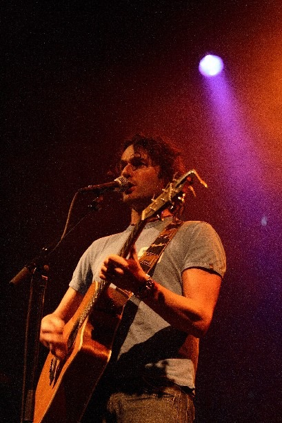

Hele goede website. Jou muziek is goed
— MennoSinger-songwriter from Amstelveen. Songs written on the couch at home, played on every stage that will have them.
Listen to my songs Sign the guestbook
I was a choir boy when I took up drumming lessons, at the ripe age of ten. After my high school band I became lead singer of a rock band called Apple, and these days I sing and play acoustic guitar with my cover band, The Peachkings.
For years something held me back from playing my own songs on my own. Then I was invited to the Amsterdam singer-songwriter competition Mooie Noten in 2005, and I learned that performing solo is great.
Writing my own songs is a real and ongoing source of joy in my life.
Heroes: Prince, Stevie Wonder, The Beatles, Led Zeppelin, James Taylor, Van Halen.
My EP Live & Acoustic at P60 and everything new, straight from Spotify.
Want me to play at your party or venue? Get in touch.
Been to a gig? Got a favourite song? Write it down here. I read every message.
NEW-GUESTBOOK-CODE-HERE
104 messages from the original johnspijker.nl. Scroll to read them all.
Hele goede website. Jou muziek is goed
— MennoHele mooi muziek
— anoniemGoede website hoor alleen matige artiest
Groet bert
J.O.H.N. S.P.I.J.K.E.R. = K.L.O.O.T.Z.A.K
— ktGozert! 'Easy Does It' is on its way! Geniet ervan.
Groet, Gijs
Hoi John, dank je wel dat je me zo prachtig hebt toegezongen tijdens mijn afscheid van mijn team. Ik vond het al een bijzondere avond, maar jij hebt deze nog een stuk specialer gemaakt. Je hebt veel talent en passie en daar houd ik van. Veel succes en groetjes, Saskia
— saskian@microsoft.comHoi John
Ik vind je muziek echt
geweldig ik wens je veel succes
met je andere liedjes.
finally I got to know yr web site so i can follow your music from italy!
— daniHallo John,
Toeval bestaat niet, nog een John....
Hoe is het met Joth? Enne, wanneer komt je cd uit?
Laat het me even weten.
Liefs,
He John,
Beetje star struck! Lang geleden hebben wij samen gewerkt en toen wist ik al dat je het heel leuk gaat doen in de muziek. En het wordt alleen maar grootser!
Ik heb naar een aantal nummers geluisterd, en wat mij betreft sta je op dezelfde level als mijn idol John Mayer. but what's in the name?
Hoi John,
Ik vind je muziek te gek!
wanneer komt je cd uit?
Ha John, Mooi nummer gisteren op de boot. Echt gaaf!
Tot een volgende keer,
Hi John, was goed en gezellig om je weer eens te spreken! Keep up the good work en wellicht zien we elkaar snel eens in the social club??? Ik hoor het graag! Later en alvast een fijn weekend!
— joost dobbeHee john,
Goede website man! Spreek je later,
Mars
Hey John,
Te gek optreden in A'dam donderdag!
Echt super liedjes! mooie stem!
en een lekkere groove!
Ik hoop snel nog eens met je op het
zelfde podium te mogen staan!
Ga zo door!
Groet,
Frank van der star
(drummer Monsieur cannibale)
Leuke website
Agnes
Eindelijk je site kunnen bekijken. Erg leuk!
— Petra Rijers ZwolleJohn, jou gisterenavond zien optreden bij "Mulligan's" en zeer geimponeerd door jouw stem! Machtig mooi man. Ook teksten en style muziek passen prima bij je. Zou je wel eens willen zien optreden met een goeie band, of liever nog een orkest, achter je. Dan krijgt jou geluid nog veel meer impact. Wellicht dat dat moment nog eens komt. Voorlopig hoop ik dat je mijn avond op 15 september a.s. mede tot een succes gaat maken. We zien elkaar. De "Oude" Rocker.
— Heike Müller Smiten dan toch je website gevonden! ziet er coolio uit.
Groeten,
Terence
check it out www.terencesamson.com
Hee wat leuk je eigen site. Mooie vormgeving ook. Hoe bevalt het vaderschaps.
Liefs je nicht Margreet
halllllllllllllllllllo
— anoniemLeuk man!
Op naar de Prof!
Hein
He John,
Ouwe gek!!
Leuk man dat je zo professioneel bezig bent met muziek.
Alles goed met je?
Ik hoor van m'n ouders af en toe wat.
Ik zag dat je binnenkort in Utrecht speelt.
Als het even kan dan zoek ik je op.
Groeten uit Soesterberg,
Je neef Joost
Johnnie, goed je effe te zien gisteren, lekker site en erg leuk te zien dat je zo je eigen weg blijft gaan - na mijn terugkeer uit t buitenland drinken we er eentje!
— BasHey Kerel,
je weet het, je bent van harte welkom in mijn musikale pub in Shanghai.
Ik zal een foto van je erin doen.Ik zie je snel in Live in China
dus dat ding dat je deed toen je nog niet bij de supermannen was is geen gig?
— www.opscherp.orgHe John!!
Ik wil je graag weer eens zien spelen en probeer er de 19e er bij te zijn in de social club..
Spreek je.
Eric Nootebos
jo ik zit bij cathelijne in de klas en vette site
veel geluk nog laterzzzzzzzzzz!!!!!!!!!
Hallo John!
Ook jij bedankt voor de errug leuke avond in manifesto.Ik hoop dat je nog eens langskomt, ik heb er erg van genoten.
fijn weekend,
arwin
Zo Johnnie, geile site, goeie foto! Grussen, Sally (zonder eigen site)
— Sallygamaarverderindemuziekendatkantoortabee
— sjoerdjaja ik zag het weer die vingers in die grote gok van je, wat een held ben je toch........
— anoniemJohnny's comin' to Amstelveen!
And I'll be there!
New Jersey RuLeS
Hee John!
Het genoegen was geheel wederzijds... Altijd weer
afwachten wat voor mede-vlees je in de kuip hebt op zo'n avond, maar we hebben ons prima vermaakt.
We komen elkaar vast wel weer eens tegen. Tot die tijd: succes met je muziek!
Jelmer - Stud Muffins
Hey john, hier even een berichtje uit het zonnige Flevoland. We Hebben genoten van je optreden in kos. Ga zo door vriendelijke groet bart en dinja
— Bartdeveldvoetballer@hotmail.comjohn,
je klonk goed gisteren in de melkweg.. we hoorden je voor het eerst en waren onder de indruk. ben je nog geboekt voor dat andere optreden?
hou je in de gaten, groeten simon
hoi john!
goed gedaan gister..ontspannen en zuiver.
je 'hits' op de site zijn zeker al verdubbeld?
groetjes sandra
Ik vond je vanavond hartstikke leuk spelen, goed dat er nog dergelijke musici in Nederland rond lopen. Prima stem en begeleiding van je zelf. Laat me via je site weten of je inmiddels een cd uit hebt.
— cluckhardt@hetnet.nlook helemaal geen gekke site...maar goed dat wist je al..heel veel succes morgenavond! ( gaat denk ik wel lukken om nog een liedje mee te pikken..) spreek je gauw . grt
— HaroldHe die John
Ik wou je ff succes wensen voor woensdag. Tof man spelen in de melkweg. Wie weet komen wij met ons bandje ook eens zover, voor ons nog een beetje een droom om te verwezenlijken. Als het zo doorgaat kun je straks je eigen VIP-gastenlijst maken in plaats van er (inqognito) op te staan. Nogmaals erg tof voor je, ik vind het jammer dat ik er niet bij kan zijn woensdag.
Groetjes Ronny
Ik zag dat je 2 augustus het voorprogramma van ALO in de Melkweg doet! Te gek! Ik ben er zeker bij!
Ik vond ALO namelijk ook te gek in het voorprogramma van Jack Johnson in de Heineken Music Hall.
Zet 'm op!
Groetjes, Suzanne
Hey John,
Ik vond het een erg leuk optreden vorige week in Kultuurhuis Bosch. Als ik de tijd en wat geld vind kom ik volgende week ook even kijken in Camelot.
Groetjes Jelmer
New Jersey rocks! drinks this week!
— Billy the kidHoi!!!
Leuk optreden in de BG!! Klinkt allemaal erg leuk!! Zal volgende x in de auto terug wat vriendelijker tegen je doen!!
Maike
Hi John,
Supergoed gedaan! Je kunt zo je eigen bedrijfje beginnen ;-) De dames hebben genoten en ik heb je website doorgestuurd.
Heel heel erg bedakt voor je komst op zo'n korte termijn en je perfecte prive-optreden!
mieke
Hi John
Nu al zo blij dat je zaterdag voor ons gaat spelen!!je maakt mijn dag!
Hey John, leuke liedjes heb je staan! Had je vrijdag gehoord in BG, klinkt echt goed, ben benieuwd naar een echte CD. Hier heb je ook een linkje van mijn bandje (herrie): www.pure-serenity.com
Seeya mate,
Gideon
Dag turkse vriend
— groetjes Mohammed wortelhey man
gezellig gisteren in de BG, kom ook een keer kijken als je met de band speelt....
liefs
Hoi John
Als collega van Cathelijne dacht ik: leuk om eens uit te checken, dat was een goed idee! Mooie liedjes en teksten, vooral het eerste - ik ben benieuwd naar je cd!
HaI John,
Alhoewel ik zelf uit het CSNY-tijdperk stam, kan ik jouw muziek erg waarderen. Mocht je ooit een CD maken, dan zijn Rineke en ik natuurlijk de eersten die hem aanschaffen. In veel van de reacties lees ik dat je zo'n mooie jongen bent. Dat kan ik als aanstaande schoonvader natuurlijk moeilijk beoordelen. Blijf er echter maar in geloven, evenals in je talent.
Rob
fka john wanneer kom je lans met je gitaar he had belooft groetjes mohamed
— crazypappie@hotmail.comHey John! Dat gaat al lekker, jij als vergane glorie gaat optreden in Zwolle in je favouriete tentje, vergane glorie voor al je vrinden.
Succes man!!
Zie je snel
Jah tegek, bedankt voor al je scheten, je grappen je gezelligheid maar bovenal je optreden!
— Mark DokterGeweldig optreden gister in Villa 29
Ik heb genoten
John,
Wat ben je toch een moooooie jongen!!
Ga zo door man! Spreek je snel weer.
Emrah
He John, lang niet meer gezien gehoord of gesproken, maar geloof dat ik vanavond weer de kans krijg in de Sugar Factory... wordt vast leuk! heb ook een vraag voor jou: Wat vind jij het mooiste liefdeslied ever?? x Lot
— llorijn@xs4all.nlHeel veel succes komende 4 februari in de Villa 29 te Barneveld!!
— mark_dokter@hotmail.comZeg Johnnie-boy! Groovy pics, dat heeft Cathje goed gedaan! Waarom is die site van jou in het Engels? Heb je nu al last van ster-allures? Maar goed, go boy!
Gr. Bas (collega van cath)
Hey Mr Spiekrie, heb je al gekeken op www.emagazine.nl, je staat er mooi op!! pagina 55/56/57...... het gaat goed he! Leuk stukje ook, ben weer trots op je.
Dikke Kus,
Kojak
...hopelijk verdien je nu een paar stuivers om je achterbakse kontje te krabben! Juhhhhhwel!
— anoniemHey ouwe droefsnoet hoe is het met je schrale kontje? Jij bent goed bezig hoor, ik blijf het altijd maar onfrisse lui vinden hoor die guitar boys!
— Hakkie (@)fijne kerst met je vrouw!
Je hebt een 'super-voice'........
groet, james
Ola! dat stukje op spunk of iets dergelijks legt je ook al geen windeiren. Ik zag u op de rockkaraoke op die bewuste avond en ben er van overtuigd dat het met je eigen muziek ook wel snor zit! Rock aan!
— CharlotteHey!
Ik zag je afgelopen zondag optreden in de Heksenketel in Roosendaal en ik was diep onder de indruk!
Zo mooi!
Ik hoop dat ik je nog eens mag beluisteren.
=)
Marleen.
He John
Hoorde dat je Arnon had gesproken. Mooie www hoor !
Irwin Budding, van de economie studie...
He John ik kan je nummers al bijna helemaal meezingen... Da's een goed teken volgens mij... X Fan
— anoniemIk had al een keer van je gehoord maar de reclame die voor je op spunk is gemaakt liet me toch maar even hier kijken.
ziet er lekker profi uit, verwacht snel een doorbraak;)
xx
Je bent en blijft een mooooooooooooie jongen. Namens de pcc uit 2002. Succes verder, je bent heeeeel goed bezig Marcel.
— Marcelamsterdam@gmail.comLeuk hoor, de gigs stromen maar binnen. Ik denk dat je a la Tom Jones veel toegeworpen zal krijgen, hoewel je meer van panties houdt ;-). Succes verder. Floris.
— anoniemGozer,
Dat is een te gek site! Jij weet dst ik een van je best fan bent. Ik geloof in jou. Maar je weet het: it's a long way to the top..if you wanna rock'n'roll
Hey gosawdude! Coole site en een hoop gigs, dus das helemaal goed. Zie je snel weer!
Tjuus
Gaat lekker met de gigs...
Goed voor je!
Lekker bezig of niet?
x Caroline
Whoahhhhhh! Zop Hop! Tadeng!
You da man! Was gaaf in de Winston!
Johnnyboy, volgens mij zag ik een bericht voorbij flitsen in mijn Inbox aangaande je optredens dit weekend. Hope you had fun! Ondertussen is de nieuwe Stevie Wonder binnen :-) No worries, regelen we! Gr, Jer.
— JerryHoi John,
Die twee nummertjes klinken lekker. Ik ben aangenaam verrast. Had ik niet verwacht. Ik herkende je bijna niet. Ga zo door. We spreken snel een keer af. @
Hey man! Two flies in 1 clap! Congrats, sie you soon. Amen!
The Lord
Hi John,
Nice site! I never had the chance to tell you how much I liked your playing at the Mooie Noten semi-finals. You were great and it made my not making the finals easier to bare! I was invited by a friend to attend the Merel Mooistra gig on the 13th and am delighted to find you're on the bill. . .
Veel Succes!
Hi John,
Nice site! I never had the chance to tell you how much I liked your playing at the Mooie Noten semi-finals. You were great and it made my not making the finals easier to bare! I was invited by a friend to attend the Merel Mooistra gig on the 13th and am delighted to find you're on the bill. . .
Veel Succes!
Hallo lieve breur,
Vanzelfsprekend vind ik het echt helemaal fantastisch waar jij mee bezig bent. Ik kan niet wachten tot december! Zet h'm op! Heel veel liefs van Arda, Rupert en Juliette
Ha monsieur Spijker!
Het is je dan toch gelukt! ben zo blij voor je! Zie dat je nog steeds onwijs goed eruit ziet en ben benieuwd hoe het met je gaat... stuur me een mailtje terug, zou ik leuk vinden!
Kom snel een keer bij je kijken.
Dikke kus van je ex-collega
Antoinetje
ik was erbij de EERSTE keer
— TheoTja,binnenkort is het natuurlijk niet meer te houden!Mooi allemaal...ik ga ook een vette site nemen! CELEBRATION,BITCHES!!
— Tobi-One-KenobiBij zoveel romantiek horen mooie liedjes
x Sjef
Bij mooie liedjes hoort een mooie site!
Dikke zoen, Cath
Gespot: John bij Andre Hazes.....
Vraagje, heb je tegewoordig ook al een bodyguard??
Groetjes
All,
Op Marktplaats staat een advertentie van iemand uit Hoorn (NH) die heeft alle cd's van de Peach Kings!! Voor een leuke prijs wil hij ze verkopen! Kom snel, op = op
Groetjes
De Portier
Wanneer junnen we een cd'tje van je kopen?
Of zet anders in ieder geval meer mp3'tjes online...
John, ben benieuwd of je nog single bent! Ik kan het me bijna niet voorstellen met zo'n mooie kop en dat lekkere figuur van je.. en dan ook nog die mooie stem!
Hoop dat je mij een reactie terugstuurd.
Tot snel
xxx Kim
Hee Johny broccoli, Zal je volboeken in Veenendaal. Kinky hoor.
Eetse he
JOHN, WE HOUDEN VAN JE!
JOHN4EVER
JOKE&MADELIEF
Hey John, zondag in Wormer!! Wij zijn van de partij.
Groetjes
Peter
Toppie Joppie
xxx inge
Hey snelle boy!
Je bent en blijft een Toppertje
xxx Inge de Bruijn
Hey mooie Jongen!
Je doet het erg goed als solo artiest! Mijn vriendin en ik vinden dat je heel erg goed bezig bent! We waren afgelopen zondag in Sally's O'Brien en ik moet toegeven zowel je peronal act als de hoofdact met de boys waren super!
Hopelijk kom je snel weer optreden.
p.s We konden merken dat het Volle Maan was.... wooow
Hele dikke kus
Heidi
He Manneke!
Super man, eindelijk je eigen site!
Ziet er goed uit!
Vooral je optreden in Zwaag (Hoorn) was erg goed! De mensen hebben het er nog steeds over!
Heel veel succes de komende tijd, heb via via gehoord dat je ook binnenkort in de Wormer moet optreden!
Groetjes
Hé Johnny,
Alles goed..??!
Ha Gozerdude
Ziet er goed uit hoor!!!
John, afgelopen zaterdag heb ik erg genoten van je eigen liedjes in de Sally's. Tuurlijk de Peachkings zijn ook te gek, maar eigen liedjes zijn toch eigen! Groetjes, X
— anoniemTof!!!!
— anoniemHallo, dit het nieuwe gastenboek!!!
— anoniem